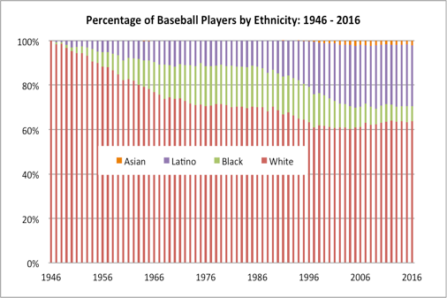

Finding the Most "Baseball Sounding" Name, Analytically
By Eric Herrmann | February 5, 2018

“Oh, I'll tell you their names, but you know it seems to me they give these ball players now-a-days very peculiar names.” - Bud Abbott
There are so many things to talk about for each player, but I have just one thing in mind. Their names.
Baseball players have always had peculiar names as Abbott puts it in “Who’s on First,” and I set out to find the most classically “baseball” name of 2017, armed with statistics on my side.
There are a lot of names in baseball. In fact there are over one-thousand, seven hundred “active” players (players who were on rosters and made their debut prior to the postseason), and each of those players own a first and last name. There was a lot of data to go through.
Before I began, I anticipated that the most common names would be foreign, given the influx of international and foreign born players to the sport. In general, there has been a sharp rise in minorities in the MLB since the 1950s (as shown in the chart to the right).
However, contrary to my initial hypothesis, but perhaps unsurprising, “Smith” remains the most common last name in baseball. On the other end, “Matt” was the most common first name. Your typical baseball role-player might have the name “Matt Smith,” and would perhaps hope for a career better than that of the former Phillies lefty reliever Matt Smith (11.25 ERA in 9 GP). This seemed like a rather boring and not-so-analytical conclusion to my quest to find a name that was uniquely baseball sounding.
The chart above represent the rankings of how common a first was with respect to both the league median, and with respect to every other name in the league. Each data point gives a bit of perspective about the similarity relationships between names: names clustered close together are more similar than names very spread out.
Enter phonetic similarity scoring. After testing out a few algorithms, I stumbled upon Soundex, a hashing technique which transforms words and names into 4 digit alphanumeric codes corresponding to how the word or name sounds when spoken in English, and each code begins with the first letter of the name it’s supposed to represent. This might sound a bit complicated, but basically, all you need to know is that Soundex codes that are relatively similar should correspond to relatively similar sounding words. For example, the name “Austen” corresponds to the code “A235,” and the name “Dustin” corresponds to the code “D235.” As you can see, two phonetically similar names have very similar codes. In fact, these codes differ by only one digit. The smaller the difference between two Soundex codes, the closer they would be phonetically.
I took this theory and applied it to all three-thousand, five-hundred and three names I had in my data set and minimized the total digit differences between codes for both the first and last name data sets. The name codes with the most in common with all other name codes would be the ones with the least amount of “distance” between it and every other point. Several thousand lines of code later, I had arrived at my Mecca, I had found the most “baseball” name in baseball…
Jose Morris. Jose Morris? That’s right. Jose. Morris. The most perfect combination of names that definitely did signify the current multi-racial diversity of baseball, while also solidly capturing the slight absurdity that make great baseball names great. The absurdity which lies in the fact that you can’t get much more “American” than Jose Morris. It’s pure, simple, unadulterated Americana, just like the game itself.
While I’m sure there are wackier, more peculiar, or simply more well-known names in baseball, in a game now dominated by advanced analytics (to a degree matched by no other sport), it’s entirely fitting to regard the phonetic codes “J2 0, M620” as the centerpiece of America’s pastime. And while there are no players in the league currently bearing that name, the name now permanently has a special place in my heart. As the sport continues to grow and becomes ever more diverse, there is no doubt in my mind that there will be a pro player named Jose Morris. Inevitably, one day, a young prospect named Jose Morris will make his debut in the majors, and on that day, I will be his number one biggest fan. Naturally.
Edited by Neil Sharma